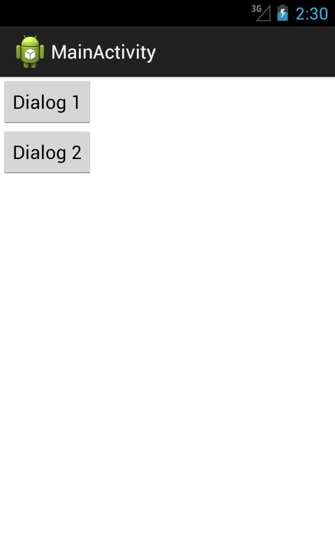
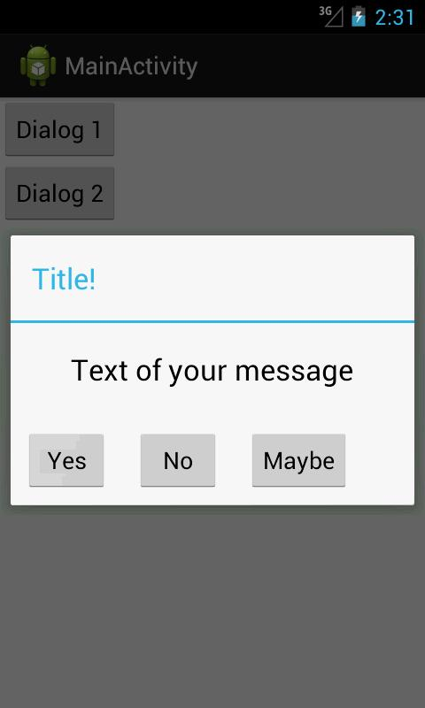
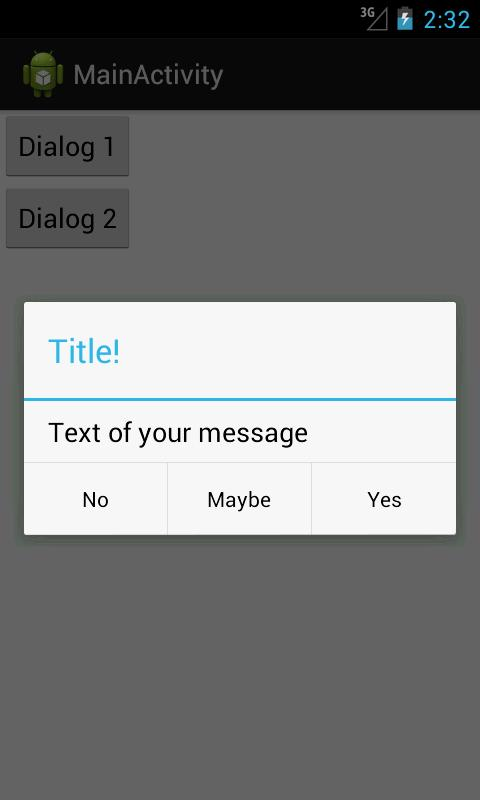

В этом уроке:
- работаем с DialogFragment
Продолжаем рассматривать наследников Fragment. DialogFragment – отличается от обычного фрагмента тем, что отображается как диалог и имеет соответствующие методы.
Построить диалог можно двумя способами: используя свой layout-файл и через AlertDialog.Builder. Нарисуем приложение, которое будет вызывать два диалога, построенных разными способами.
Создадим проект:
Project name: P1101_DialogFragment
Build Target: Android 4.1
Application name: DialogFragment
Package name: ru.startandroid.develop.p1101dialogfragment
Create Activity: MainActivity
Добавим строки в strings.xml:
<string name="dialog_1">Dialog 1</string>
<string name="dialog_2">Dialog 2</string>
<string name="message_text">Text of your message</string>
<string name="yes">Yes</string>
<string name="no">No</string>
<string name="maybe">Maybe</string>Мы будем создавать два диалога, соответственно нам понадобятся два фрагмента.
Создадим layout-файл для первого фрагмента.
dialog1.xml:
<?xml version="1.0" encoding="utf-8"?>
<LinearLayout
xmlns:android="http://schemas.android.com/apk/res/android"
android:layout_width="wrap_content"
android:layout_height="match_parent"
android:orientation="vertical">
<TextView
android:id="@+id/textView1"
android:layout_width="wrap_content"
android:layout_height="wrap_content"
android:layout_gravity="center"
android:layout_margin="20dp"
android:text="@string/message_text"
android:textAppearance="?android:attr/textAppearanceLarge">
</TextView>
<LinearLayout
android:layout_width="wrap_content"
android:layout_height="wrap_content">
<Button
android:id="@+id/btnYes"
android:layout_width="wrap_content"
android:layout_height="wrap_content"
android:layout_margin="10dp"
android:text="@string/yes">
</Button>
<Button
android:id="@+id/btnNo"
android:layout_width="wrap_content"
android:layout_height="wrap_content"
android:layout_margin="10dp"
android:text="@string/no">
</Button>
<Button
android:id="@+id/btnMaybe"
android:layout_width="wrap_content"
android:layout_height="wrap_content"
android:layout_margin="10dp"
android:text="@string/maybe">
</Button>
</LinearLayout>
</LinearLayout>Так будет выглядеть наш диалог – текст сообщения и три кнопки.
Создаем класс Dialog1.java:
package ru.startandroid.develop.p1101dialogfragment;
import android.app.DialogFragment;
import android.content.DialogInterface;
import android.os.Bundle;
import android.util.Log;
import android.view.LayoutInflater;
import android.view.View;
import android.view.View.OnClickListener;
import android.view.ViewGroup;
import android.widget.Button;
public class Dialog1 extends DialogFragment implements OnClickListener {
final String LOG_TAG = "myLogs";
public View onCreateView(LayoutInflater inflater, ViewGroup container,
Bundle savedInstanceState) {
getDialog().setTitle("Title!");
View v = inflater.inflate(R.layout.dialog1, null);
v.findViewById(R.id.btnYes).setOnClickListener(this);
v.findViewById(R.id.btnNo).setOnClickListener(this);
v.findViewById(R.id.btnMaybe).setOnClickListener(this);
return v;
}
public void onClick(View v) {
Log.d(LOG_TAG, "Dialog 1: " + ((Button) v).getText());
dismiss();
}
public void onDismiss(DialogInterface dialog) {
super.onDismiss(dialog);
Log.d(LOG_TAG, "Dialog 1: onDismiss");
}
public void onCancel(DialogInterface dialog) {
super.onCancel(dialog);
Log.d(LOG_TAG, "Dialog 1: onCancel");
}
}В onCreateView мы получаем объект Dialog с помощью метода getDialog и устанавливаем заголовок диалога. Далее мы создаем view из layout, находим в нем кнопки и ставим им текущий фрагмент в качестве обработчика.
В onClick выводим в лог текст нажатой кнопки и сами явно закрываем диалог методом dismiss.
Метод onDismiss срабатывает, когда диалог закрывается. Пишем об этом в лог.
Метод onCancel срабатывает, когда диалог отменяют кнопкой Назад. Пишем об этом в лог.
Создаем второй фрагмент. Здесь мы будем строить диалог с помощью билдера, поэтому layout-файл не понадобится. Создаем только класс Dialog2.java:
package ru.startandroid.develop.p1101dialogfragment;
import android.app.AlertDialog;
import android.app.Dialog;
import android.app.DialogFragment;
import android.content.DialogInterface;
import android.content.DialogInterface.OnClickListener;
import android.os.Bundle;
import android.util.Log;
public class Dialog2 extends DialogFragment implements OnClickListener {
final String LOG_TAG = "myLogs";
public Dialog onCreateDialog(Bundle savedInstanceState) {
AlertDialog.Builder adb = new AlertDialog.Builder(getActivity())
.setTitle("Title!").setPositiveButton(R.string.yes, this)
.setNegativeButton(R.string.no, this)
.setNeutralButton(R.string.maybe, this)
.setMessage(R.string.message_text);
return adb.create();
}
public void onClick(DialogInterface dialog, int which) {
int i = 0;
switch (which) {
case Dialog.BUTTON_POSITIVE:
i = R.string.yes;
break;
case Dialog.BUTTON_NEGATIVE:
i = R.string.no;
break;
case Dialog.BUTTON_NEUTRAL:
i = R.string.maybe;
break;
}
if (i > 0)
Log.d(LOG_TAG, "Dialog 2: " + getResources().getString(i));
}
public void onDismiss(DialogInterface dialog) {
super.onDismiss(dialog);
Log.d(LOG_TAG, "Dialog 2: onDismiss");
}
public void onCancel(DialogInterface dialog) {
super.onCancel(dialog);
Log.d(LOG_TAG, "Dialog 2: onCancel");
}
}Обычно для заполнения фрагмента содержимым мы использовали метод onCreateView. Для создания диалога с помощью билдера используется onCreateDialog. Создаем диалог с заголовком, сообщением и тремя кнопками. Обработчиком для кнопок назначаем текущий фрагмент.
В onClick определяем, какая кнопка была нажата и выводим соответствующий текст в лог. В случае создания диалога через билдер, диалог сам закроется по нажатию на кнопку, метод dismiss здесь не нужен.
Методы onDismiss и onCancel – это закрытие и отмена диалога, аналогично первому фрагменту.
Меняем layout-файл для MainActivity - main.xml:
<?xml version="1.0" encoding="utf-8"?>
<LinearLayout
xmlns:android="http://schemas.android.com/apk/res/android"
xmlns:tools="http://schemas.android.com/tools"
android:id="@+id/LinearLayout1"
android:layout_width="match_parent"
android:layout_height="match_parent"
android:orientation="vertical">
<Button
android:id="@+id/btnDlg1"
android:layout_width="wrap_content"
android:layout_height="wrap_content"
android:onClick="onClick"
android:text="@string/dialog_1">
</Button>
<Button
android:id="@+id/btnDlg2"
android:layout_width="wrap_content"
android:layout_height="wrap_content"
android:onClick="onClick"
android:text="@string/dialog_2">
</Button>
</LinearLayout>Здесь только две кнопки.
Кодим MainActivity.java:
package ru.startandroid.develop.p1101dialogfragment;
import android.app.Activity;
import android.app.DialogFragment;
import android.os.Bundle;
import android.view.View;
public class MainActivity extends Activity {
DialogFragment dlg1;
DialogFragment dlg2;
@Override
public void onCreate(Bundle savedInstanceState) {
super.onCreate(savedInstanceState);
setContentView(R.layout.main);
dlg1 = new Dialog1();
dlg2 = new Dialog2();
}
public void onClick(View v) {
switch (v.getId()) {
case R.id.btnDlg1:
dlg1.show(getFragmentManager(), "dlg1");
break;
case R.id.btnDlg2:
dlg2.show(getFragmentManager(), "dlg2");
break;
default:
break;
}
}
}Создаем диалоги и запускаем их методом show, который на вход требует FragmentManager и строку-тэг. Транзакция и коммит происходят внутри этого метода, нам об этом думать не надо.
Все сохраняем и запускаем приложение.

Жмем Dialog1

Отобразился наш простенький диалог.
Жмем какую-нибудь кнопку, например, Yes - диалог закрылся. Смотрим логи:
Dialog 1: Yes
Dialog 1: onDismiss
Все верно.
Снова запустим первый диалог и нажмем клавишу Назад (Back). Смотрим лог:
Dialog 1: onCancel
Dialog 1: onDismiss
Сработал onCancel – диалог был отменен, и onDismiss – диалог закрылся.
Если мы будем поворачивать экран, то каждый раз будет отрабатывать onDismiss, но диалог снова будет отображен после поворота.
Запустим второй диалог – нажмем кнопку Dialog 2.

Отобразился стандартный сконструированный нами диалог. Жмем, например, No – диалог закрылся. В логах:
Dialog 2: No
Dialog 2: onDismiss
Снова запустим второй диалог и нажмем Назад. В логах:
Dialog 2: onCancel
Dialog 2: onDismiss
Все так же, как и в первом случае.
Еще несколько слов по теме.
Если вы не хотите, чтобы ваш диалог можно было закрыть кнопкой, используйте для вашего диалог-фрагмента метод setCancelable с параметром false.
Есть еще один вариант вызова диалога. Это метод show, но на вход он уже принимает не FragmentManager, а FragmentTransaction. В этом случае система также сама вызовет commit внутри show, но мы можем предварительно поместить в созданную нами транзакцию какие-либо еще операции или отправить ее в BackStack.
Вы можете использовать диалог-фрагменты, как обычные фрагменты и отображать их на Activity, а не в виде диалога. Но при этом будьте аккуратнее с использованием getDialog. Я так понял, что он возвращает null в этом случае.
Если AlertDialog.Builder вам незнаком, то посмотрите Урок 60 и несколько следующих за ним. Там достаточно подробно описано, как создавать различные диалоги.